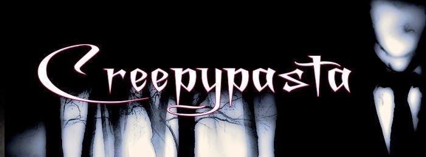
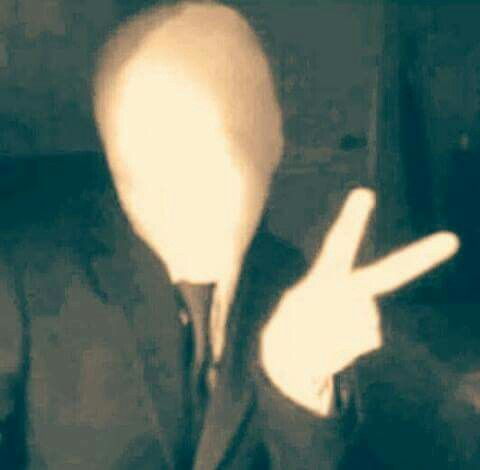
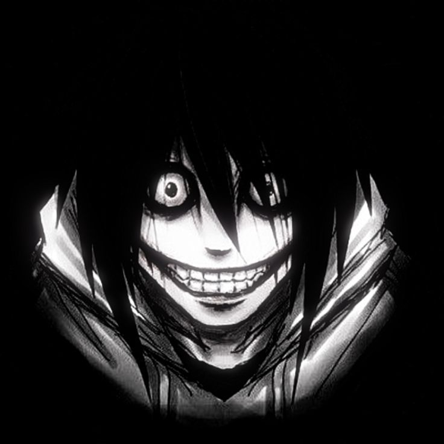

THE ARCHIVE / 001
Истории, которые заставят сомневаться, что реальность на самом деле безопасна.

Крипипаста (Creepypasta) — это жанр интернет-хоррора, который объединяет страшные истории, легенды и хоррор-контент, распространяемые в сети. Обычно такие рассказы создаются для того, чтобы вызвать у читателя чувство страха, тревоги и неизвестности. Их действие часто происходит в обычном мире, из-за чего события кажутся вполне реальными. Жанр зародился в интернете около 2000-х годов. Само название произошло от «creepy» (жуткий) и «copypasta» (текст, который копируют и распространяют в сети). Изначально пользователи делились короткими страшными историями на форумах и имиджбордах (в частности на 4chan) и получил широкое распространение в рунете в 2007-2008 годах. Со временем жанр стал развиваться, а некоторые истории превратились в настоящие интернет-легенды.
Главная особенность крипипасты — события максимально правдоподобные. Истории могут подаваться как личные воспоминания, найденные записи, переписки или свидетельства очевидцев. Часто в них используются неизвестность, напряжённая атмосфера, неожиданные повороты и открытые концовки. Крипипаста включает множество направлений. Это могут быть истории о загадочных существах и персонажах, проклятых изображениях, странных видеоиграх, потерянных записях и городских легендах. Некоторые рассказы посвящены паранормальным явлениям, другие — психологическому ужасу или необъяснимым событиям.
Популярность жанра во многом связана с интернетом: любой пользователь может придумать собственную историю и поделиться ею с другими. Читатели не только знакомятся с рассказами, но и обсуждают их, создают изображения, видео и собственные версии событий. Благодаря этому крипипаста превратилась в целую интернет-культуру. И все еще остается популярной и обсуждаемой в интернете.
CHARACTER FILE / 001
↳ Нажмите на имя, чтобы прочитать полную историю персонажа
СЛЕНДЕРМЕН — ЧЕЛОВЕК БЕЗ ЛИЦА

Слендермен — персонаж интернет-хоррора, созданный Эриком Кнудсеном под псевдонимом Victor Surge в 2009 году. Впервые он появился на форуме Something Awful в рамках конкурса по созданию фотографий с паранормальными явлениями.
Обычно Слендермена изображают как очень высокого и непропорционально худого человекоподобного существа. Он носит строгий чёрный костюм, белую рубашку и галстук. Его главная отличительная черта - отсутвие лица.
В историях Слендермену приписывают способность незаметно появляться и исчезать, преследовать людей, влиять на их сознание и управлять похожими на щупальца отростками, растущими из спины.
"Сегодня мы с Егором будем искать слендермена настоящего!!"
Cо временем вокруг него возникла целая мифология. Пользователи создавали собственные истории, фотографии, видеоролики и игры о Слендермене. Наиболее громким случаем стало нападение в Уокешо (штат Висконсин, США) в мае 2014 года, когда две двенадцатилетние девочки нанесли сверстнице ножевые ранения, утверждая, что действовали ради Слендермена.
По этому персонажу также есть множество проектов. К примеру, веб-сериал: Marble Hornets (2009-2014) - это один из ключевых проектов, развивших мифологию персонажа, игры: Slender: The Eight Pages (2012) и Slender: The Arrival (2013), и фильмы: Always Watching: A Marble Hornets Story (2015) и «Слендермен» (2018).
CHARACTER FILE / 002
↳ Нажмите на имя, чтобы прочитать полную историю персонажа
ДЖЕФФ УБИЙЦА — ЧЕЛОВЕК С УЛЫБКОЙ

Джефф Убийца — персонаж интернет-хоррора, получивший известность благодаря крипипасте, опубликованной в сети в начале 2010-х годов. Персонаж был создан пользователем под ником "Sesseur" и стал объектом фанатских работ и интернет-мемов. Его история связана с нападением на подростка и постепенным превращением обычного человека в жестокого убийцу.
Джеффа обычно изображают молодым человеком с очень бледной кожей, тёмными волосами и неестественно широкой улыбкой, вырезанной на щеках. Его глаза окружены тёмными следами, а привычная одежда состоит из белой толстовки и тёмных брюк.
В историях Джеффа описывают как жестокого, непредсказуемого и склонного к насилию человека. Его появление часто сопровождается странными ночными происшествиями и нападениями. Наиболее известная фраза персонажа перед нападением: «Go to sleep».
Чаще всего изображается как 13-летний подросток. По мотивам персонажа вышло множество инди-хорроров, где нужно прятаться от Джеффа и искать предметы для побега или секретных концовок.